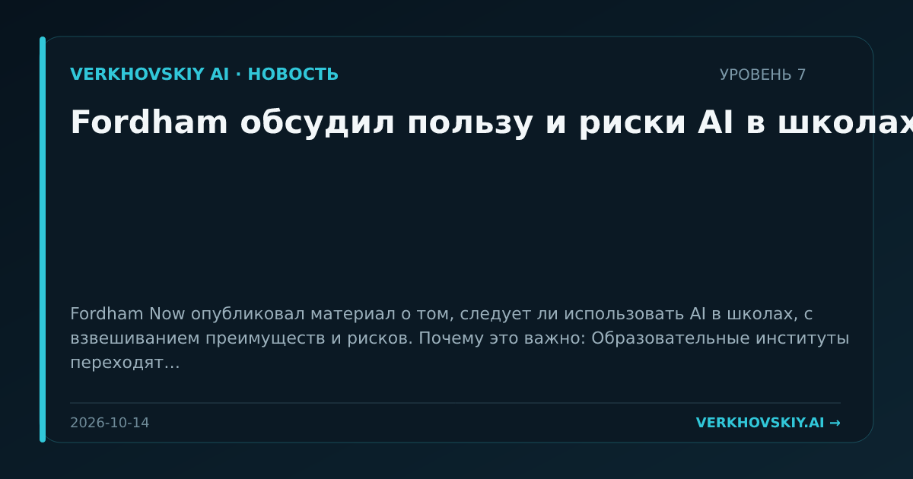

Fordham обсудил пользу и риски AI в школах
Fordham Now опубликовал материал о том, следует ли использовать AI в школах, с взвешиванием преимуществ и рисков. Почему это важно: Образовательные институты переходят от общего вопроса запрета AI к оценке условий использования. Это формирует будущие нормы подготовки учащихся и учителей к работе с AI.